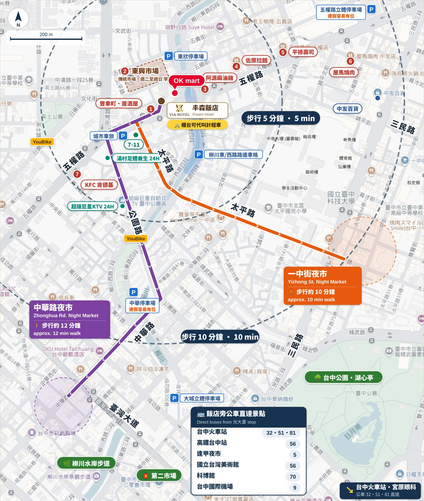

點地圖可放大｜Tap to zoom
一晚怎麼玩 Our picks for one night
櫃台同仁私房路線，照著走不會錯。
🍜 吃貨路線｜Foodie night
- 傍晚 16:00 開門就去 阿源麻油雞（晚了要排隊）
- 步行 10 分鐘到 一中街夜市，邊走邊吃、逛服飾小店
- 回程經過 中友百貨，21:30 前還能逛
阿源麻油雞週一公休，週一改吃 豐聿町 或 佐原拉麵。
🌙 宵夜路線｜Late-night
- 晚餐吃 屋馬燒肉（建議先訂位）
- 22:00 以後散步到 中華路夜市，攤位營業到凌晨
- 回飯店前到隔壁 OK mart 補飲料
中華路夜市是在地人的老夜市，多數攤位只收現金。
☀️ 早起路線｜Early bird
- 走 2 分鐘到 東興市場，吃一份傳統早餐
- 逛市場攤位，買水果帶走
- 有時間再散步到 台中公園・湖心亭（步行約 20 分鐘）
東興市場週一公休，約中午收攤，越早去越熱鬧。
🏛️ 舊城半日遊｜Old town half-day
- 早上散步到 第二市場 吃早午餐（週一公休）
- 走到 台中火車站，看紅磚舊站
- 對面 宮原眼科 買伴手禮、吃冰淇淋
- 回程在台中火車站搭同號公車（32・51・81）回光大里站
不想走路也可以全程搭公車，到台中火車站再步行。
夜市 Night markets
夜
一中街夜市Yizhong St. Night Market
學生商圈，小吃、手搖飲、服飾小店最多，逛起來最熱鬧。
🚶 步行約 10 分鐘約 11:00–22:00（週末到 23:00）
Google 導航
夜
中華路夜市Zhonghua Rd. Night Market
台中老牌夜市，攤位沿街排開，在地人吃宵夜的地方。
🚶 步行約 12 分鐘約 16:00–凌晨 04:00
Google 導航
稍遠一點的景點 A bit further
搭一段公車或散步 20 分鐘左右，就是台中最經典的舊城區。
站
台中火車站Taichung Station
新站與日治時期的紅磚舊站並排，旁邊就是宮原眼科、第四信用合作社，是舊城散步的起點。
🚌 光大里站搭 32・51・81 直達🚶 步行約 25 分鐘
Google 導航
冰
宮原眼科Miyahara
日治時期眼科診所改建的伴手禮店，像圖書館一樣的木櫃很好拍，冰淇淋口味多到難選。
10:00–21:00每天營業🚌 搭到台中火車站，步行約 3 分鐘
Google 導航
市
第二市場Taichung Second Market
日治時期留下的老市場，在地人吃早午餐的地方，滷肉飯、蘿蔔糕、豆漿都有名，下午就陸續收攤。
07:30–15:30週一公休🚶 步行約 18 分鐘
Google 導航
園
台中公園・湖心亭Taichung Park
百年老公園，湖心亭是台中地標，免費入園，適合飯後散步。
🚶 步行約 20 分鐘
Google 導航
周邊美食 Food
1
豐聿町·居酒屋Izakaya
日式燒烤，櫃台推薦。就在飯店旁邊。
18:00–24:00每天營業
Google 導航
2
東興市場Traditional market
很多攤可買可逛，傳統早餐滿滿鄉土味。
清晨 03:30–12:00週一公休
Google 導航
3
阿源麻油雞Sesame-oil chicken
極出名的老店，一定排隊。
16:00–22:00週一公休
Google 導航
4
佐原拉麵Ramen
大片叉燒、濃厚豚骨湯頭，高評價。
11:00–14:00、17:00–21:00週三公休
Google 導航
5
平祿壽司 五權店Conveyor sushi
超人氣壽司，餐期需排隊。
11:00–20:30每天營業
Google 導航
6
屋馬燒肉 中友店Yakiniku
台中必吃燒肉店，建議先訂位。
11:00–24:00每天營業
Google 導航
7
KFC 肯德基Fast food
全台都一樣。
08:00–24:00每天營業
Google 導航
購物・便利 Shopping
購
中友百貨Chungyo Dept. Store
一中商圈旁的大型百貨，地下美食街選擇多。
11:00–21:30（週五、六到 22:00）
Google 導航
24
OK mart・7-11Convenience stores
OK mart 就在飯店隔壁；7-11 在五權路與太平路口。
24 小時
OK mart 導航
娛樂放鬆 Relax & fun
足
湯村足體養生會館Foot & body massage
逛完夜市走累了，回飯店前按一下腳。就在公園路上。
24 小時🚶 步行約 3 分鐘
Google 導航
唱
超級巨星自助式 KTV 臺中公園店Karaoke
半夜還想續攤也有地方去。
24 小時🚶 步行約 5 分鐘
Google 導航
停車資訊 Parking
步行 10 分鐘內就有 5 個停車場，連假也好停。
P
中華停車場
20 元/時，連假容易有位。入口在柳川東路。
24 小時
Google 導航
P
五權路立體停車場
40 元/時，連假容易有位。中國醫藥大學附設醫院旁。
24 小時
Google 導航
P
柳川東/西路邊停車格
飯店旁柳川兩側路邊停車格，20:00～08:00 不收費。
交通 Getting around
飯店旁「光大里」站搭車即可直達。Direct buses from the 光大里 stop next to the hotel.
| 台中火車站Taichung Station | 32・51・81 |
| 高鐵台中站THSR Taichung | 56 |
| 逢甲夜市・新光三越・大遠百・秋紅谷Fengjia Night Market / Shin Kong Mitsukoshi | 5 |
| 國立台灣美術館Natl. Taiwan Museum of Fine Arts | 56 |
| 科博館Natl. Museum of Natural Science | 70 |
| 台中國際機場Taichung Airport | 9 |
🚲
YouBike 公共自行車
飯店附近公園路、英士公園都有站，騎到一中街、台中公園、第二市場都很方便。台中市註冊會員前 30 分鐘免費（以 YouBike 官方公告為準）。
🚕
叫計程車 Taxi
需要搭計程車，請告訴櫃台，我們幫您叫車。Ask the front desk and we'll call a taxi for you.
即時到站請查 台中市公車動態。